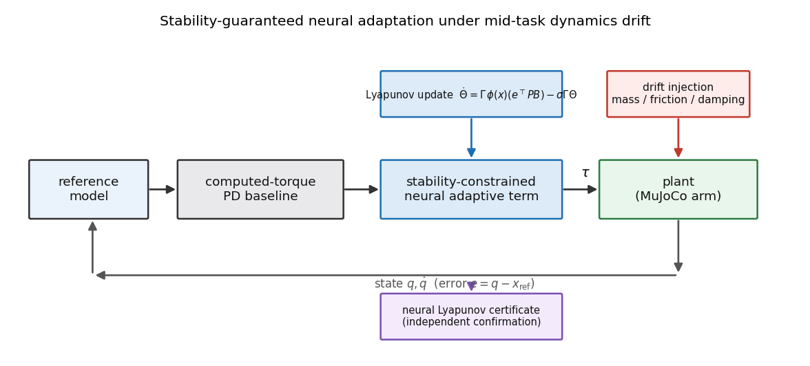
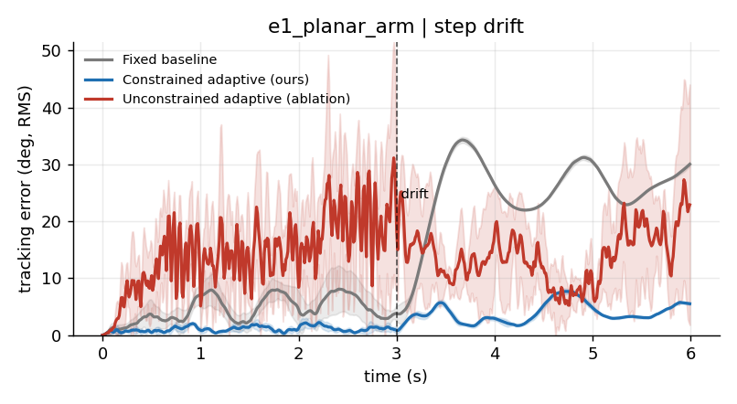
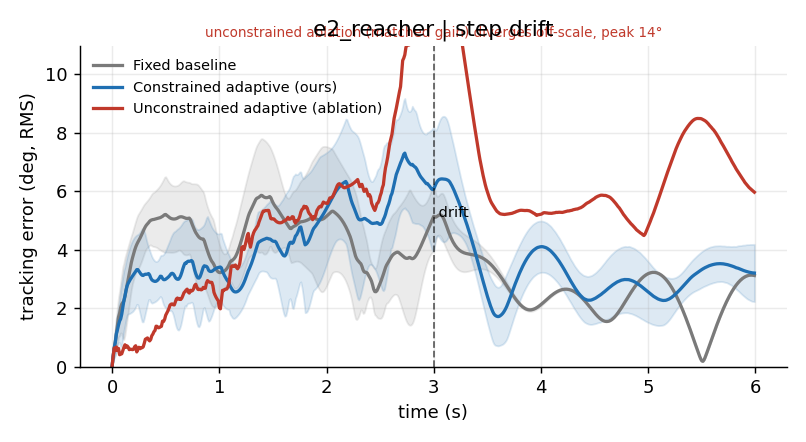
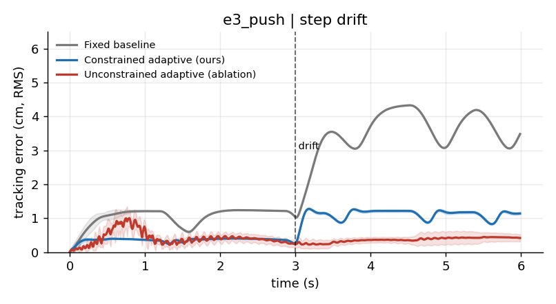
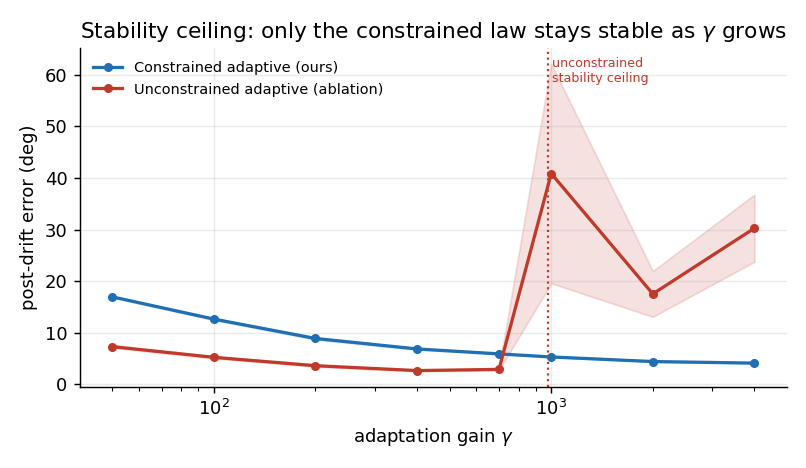

Stability-guaranteed neural adaptation for robot manipulation under mid-task dynamics drift.
[Paper] [Code] [Results] [Stability]
Learned robot policies and learned world models fit the dynamics they were trained on and break when those dynamics change at deployment, and the field's usual answers, more data, domain randomization, and online fine-tuning, are all empirical and none of them guarantee the system stays stable while it adapts. Classical Model Reference Adaptive Control has the opposite profile, because a Lyapunov-derived update law gives provable boundedness during adaptation, but it assumes a clean analytic regressor that contact-rich manipulation does not hand you. This work keeps the guarantee and still gets neural representational power by putting a bounded radial-basis neural network inside a Lyapunov-derived adaptation law, so the network supplies the features and the update law supplies the stability. We test one thing across four simulated environments, whether the controller recovers task performance after the contact physics drift mid-episode without losing stability, against a tuned fixed baseline and against an unconstrained neural-adaptive ablation that is identical except the stability machinery is removed. On a gravity-loaded planar arm the constrained controller returns tracking error to 4.4 degrees where the fixed baseline stays at 27.2 and the matched-gain unconstrained ablation diverges, and on the real OGBench cube-single benchmark, driving the actual UR5e arm to push the cube to its goal under changing table friction and mass, it halves the arm's joint tracking error to 2.1 degrees and brings the cube to within 2.8 cm of the goal where the fixed baseline degrades to 4.7 degrees and 6.5 cm and the matched-gain ablation goes fully unstable. The contribution is not a new architecture, it is the demonstration that the Lyapunov constraint lets you run the adaptation gain high enough to recover fast without the instability that the same gain produces without it.
TL;DR: a Lyapunov-derived update law wrapped around a bounded neural feature map recovers from mid-task contact drift at adaptation gains where the unconstrained version goes unstable, and a separately trained neural certificate confirms the closed loop is stable over the operating region.

Reference model. The controller tracks a stable second-order reference model, and the closed-loop tracking error obeys \(\dot e_\text{aug} = A_\text{ref} e_\text{aug} + B(\Delta(x) - u_\text{ad})\), where \(\Delta\) is the matched uncertainty the drift introduces and \(A_\text{ref}\) is Hurwitz by construction, so a positive-definite \(P\) solves the Lyapunov equation and gives the energy \(e_\text{aug}^\top P\, e_\text{aug}\) the whole analysis runs on.
The adaptive term. We write it as \(u_\text{ad} = \Theta^\top \phi(x)\), where \(\phi\) is a radial-basis network whose outputs lie in [0, 1], so the feature map is bounded by construction, which is the assumption the boundedness argument needs, and because the centers are a fixed grid the guarantee does not hinge on a lucky draw, a random tanh projection of the same width swung from 16 to 30 degrees of post-drift error across seeds while the RBF map held the spread under 0.2 degrees.
The update law. The Lyapunov-derived law above, plus a sigma-modification and a projection of each weight column onto a bounded ball, keeps the weights bounded under nonzero approximation error, which is what makes the honest claim uniformly ultimately bounded rather than asymptotically zero, and we do not claim the network is globally stable for arbitrary inputs because that would be false.
The certificate. Separately from the controller we train a positive-definite network on real closed-loop transitions and verify the exponential-decrease condition on held-out states, which gives an independent, learned check that the closed loop contracts over the operating region rather than only the controller's own Lyapunov function asserting it.
Five seeds, mean and standard deviation, both a step drift and a continuous ramp. Every number traces to a per-seed JSON a script wrote. Simulation-only.

The forearm mass jumps four times and the joint damping six times mid-episode, which drives the fixed baseline to 27.2 degrees of tracking error where it never recovers, because a computed-torque law built on the nominal mass cannot know the arm now carries an unmodeled load, and the constrained controller returns the error to 4.4 degrees in every seed with a standard deviation of 0.04 degrees, so the recovery is a property of the method rather than a lucky feature draw.

Reacher is the scope-defining negative result, and reporting it straight is what makes the rest of the table trustworthy. Its gear ratio of 200 makes the arm so over-actuated that the baseline rejects the drift on its own, degrading only from 3.4 to 2.1 degrees, so adaptation buys little and the constrained version is marginally worse because it chases measurement noise in a benign setting. The lesson is when not to reach for the method, it cancels unmodeled forces and does nothing when the drift removes control authority instead, where the right fix is a different actuator, not adaptation.

On the planar push both adaptive methods recover, the baseline stalls 3.45 cm from the goal and the constrained controller drives the block back to 1.05 cm, and here the unconstrained law is the better of the two at 0.44 cm because a block under Coulomb friction is close to a double integrator so high-gain integral adaptation does not destabilize, which means the constrained controller pays its small sigma-modification penalty and keeps a guarantee that on this benign plant goes unused. That unused guarantee is precisely what the contact-rich arm task in E4 turns out to need.
On the real OGBench cube-single benchmark the UR5e is genuinely in the loop, six joints driven by computed torque to push the cube to its goal across the real table while the contact friction rises 3.5 times and the cube mass 2.5 times mid-episode. The baseline's joint tracking degrades to 4.7 degrees and the cube falls 6.5 cm short, the constrained controller holds 2.1 degrees and lands the cube within 2.8 cm, and the matched-gain unconstrained ablation goes fully unstable at 99 degrees with the arm flailing and the cube knocked away. The advantage is real but smaller than on an earlier self-contained stand-in, because the benchmark cube is light relative to the heavy industrial arm and the push is imperfect, so we report the smaller real numbers, and the arm-in-the-loop contact dynamics are a harsher stability test than a disembodied force, which is exactly what the next section is about.
The ablation keeps the same network and removes only the Lyapunov metric, the sigma-modification, and the projection, so it isolates whether the stability machinery is load-bearing or decorative, and the gain sweep is the whole argument in one figure, because the unconstrained law is fine at low gain but has a stability ceiling, near a gain of 700 on the planar arm and near only 100 on the OGBench UR5e, above which it destabilizes, while the constrained law is stable at every gain and keeps improving, so the constraint removes the speed-versus-stability tradeoff that a naive adaptive law is stuck with.



| Environment | Controller | Post-drift error | Recovered | Instability |
|---|---|---|---|---|
| E1 planar arm | Fixed baseline | 27.19 ± 0.15 deg | 0/5 | 0.00 |
| E1 planar arm | Constrained (ours) | 4.42 ± 0.04 deg | 5/5 | 0.00 |
| E1 planar arm | Unconstrained (ablation) | 18.83 ± 4.46 deg | 0/5 | 0.53 |
| E2 reacher | Fixed baseline | 2.06 ± 0.00 deg | 5/5 | 0.00 |
| E2 reacher | Constrained (ours) | 3.40 ± 0.61 deg | 5/5 | 0.00 |
| E2 reacher | Unconstrained (ablation) | 7.25 ± 1.66 deg | 5/5 | 0.65 |
| E3 push | Fixed baseline | 3.45 ± 0.00 cm | 0/5 | 0.00 |
| E3 push | Constrained (ours) | 1.05 ± 0.03 cm | 5/5 | 0.00 |
| E3 push | Unconstrained (ablation) | 0.44 ± 0.12 cm | 5/5 | 0.00 |
| E4 OGBench cube (arm) | Fixed baseline | 4.72 ± 0.09 deg | 0/5 | 0.00 |
| E4 OGBench cube (arm) | Constrained (ours) | 2.06 ± 0.74 deg | 5/5 | 0.00 |
| E4 OGBench cube (arm) | Unconstrained (ablation) | 98.98 ± 21.28 deg | 0/5 | 1.00 |
E4 error is the UR5e joint tracking error. The cube-to-goal distances are 6.5 cm (baseline), 2.8 cm (constrained), and 14.7 cm (unconstrained).
The limits are concrete and worth stating plainly. Everything here is simulation, there is no hardware and no tactile sensing, so the contact in E3 is Coulomb joint friction standing in for a real frictional surface, and on the OGBench cube the task is a push to the goal rather than a grasp and carry, because we verified that the real Robotiq grasp cannot dynamically carry the cube. The guarantee is for matched uncertainty, the part of the dynamics that enters through the control channel, and unmatched uncertainty is out of scope, which is the honest boundary of any MRAC-style argument. The certificate is verified by sampling over a bounded region, so it is confidence over that region rather than a formal global proof, and the verification fraction is 90.5 percent rather than 100 because single-step decrease is a strict condition near the ultimate bound. E4 runs on the real OGBench cube-single benchmark in a separate Python 3.12 environment, since its dependencies do not build on Python 3.14, and we set the cube's manipulated mass to 0.5 kg because the benchmark cube is too light to load the industrial arm. The experiments are CPU-scale, five seeds and short episodes, enough to establish the claim with tight error bars on the winning environments but not a large-scale study. The next step is to put this adaptive layer beneath a learned policy on a real arm with a tactile-sensed grasp and measure whether the guarantee holds when the contact is sensed rather than simulated, which is where the matched-uncertainty assumption meets the messiest real signal and where the guarantee, if it survives, is worth the most.
pip install -r requirements.txt # CPU-only, versions pinned for Python 3.14 make quick # smoke-test every environment + figures, minutes on CPU make full # the paper numbers, all seeds, both drift regimes make figures # regenerate every figure from saved JSON # E4 is the real OGBench cube-single benchmark, whose ogbench / dm_control / labmaze # dependencies do not build on Python 3.14, so it runs in a separate Python 3.12 env: py -3.12 -m venv .venv-ogbench ./.venv-ogbench/Scripts/python -m pip install ogbench pyyaml matplotlib imageio imageio-ffmpeg pillow ./.venv-ogbench/Scripts/python -m experiments.run_e4_ogbench # three controllers on real cube-single ./.venv-ogbench/Scripts/python -m experiments.make_clips_ogbench # clips from the real scene
@misc{singh2026adaptivecontact,
title = {Adaptive Contact-Rich Manipulation Under Changing Physics},
author = {Sehaj Singh},
year = {2026},
note = {Electric Adaptation},
howpublished = {\url{https://github.com/sehajr-singhs/adaptive-contact-dynamics}}
}